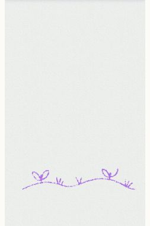
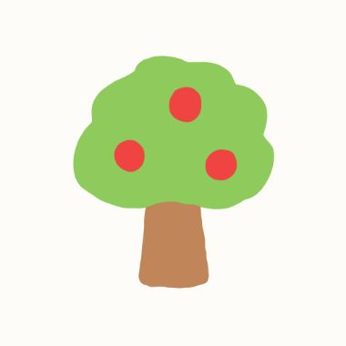

car-hiwide

5 candidate image models were each handed the same 14 toddler drawings and the exact prompt the app sends. This page compares what each one cost, how long it took, and what it drew.
A modest speed improvement is worth validating. The screen does not establish a universal visual winner or intrinsic cost savings.
Fourteen synthetic drawings, one per category, two samples per configuration: 140 finished comparison images. Every call uses the shipped “Paint directly over” prompt (ADR-0118), with GPT-5.6 Sol at medium reasoning and the existing safety instruction.
Flare low: 23.0 s median versus 24.5 s for the baseline; p90 24.0 s versus 26.7 s. The broad run allowed three calls in flight. Mean layout scores: GPT Image 2 low 83.0; Flare low 85.5; Flare medium 86.8; Sunburst low 84.5; Sunburst medium 85.1.
Recorded mean cost is 3.16¢ for Flare low versus 3.53¢ for GPT Image 2 low. Removing the orchestrator cache discount puts every low tier near 3.94¢; the image tool itself averages about 1.52¢ on all three low-tier models. Do not interpret this run as a cheaper image-token price.
The apple shows better blending in some medium-tier images. The colored balloon shows newer models sometimes preserving the red mark as a patch instead of coloring the balloon. The black scribbles show color changes despite high layout scores. Higher alignment scores do not automatically mean a better illustration.
The first pass produced 139 images and one baseline API 500. One targeted retry filled the missing image; the original failure is preserved in the run evidence. There were no refusals. The dark-paper row uses the base prompt without the Night Mode suffix. The blocked-content safety corpus and style suffixes were not tested.
The separate counterbalanced check made 16 sequential calls over four inputs (eight per model). GPT Image 2 low: 24.2 s median, 31.8 s p90. Flare low: 21.8 s median, 23.0 s p90. Model order alternated AB/BA within each input and which model started alternated between inputs. This is a small confirmation sample, not a statistically powered latency study.
Before a production switch, validate the finalist with the actual style/night requests and the full safety suite. The measured visual differences do not justify skipping those checks.
Cost is what one generated image costs at list prices. Time is how long each call took, from request to response.
The dashed line is the app's original one-request limit: the server had to answer inside 24 s or Netlify cut it off (ADR-0063). Generation now runs in a background worker the app polls (ADR-0115), so a candidate past the line is slow, not unusable. Times were measured with 3 calls running at once, so they run slower than a single call on its own would.
| Candidate | Images | Image tokens (median) | $ per image | $ per 1,000 | vs cheapest | Mean | Median | p90 | Min | Max | Refused | Errors | File size |
|---|---|---|---|---|---|---|---|---|---|---|---|---|---|
| gpt-image-2 · lowcurrent prod | 28 / 28 | 158 | $0.0353 | $35 | 1.1× | 24 s | 24 s | 27 s | 18 s | 35 s | 0 | 0 | 1,505 KB |
| gpt-image-2.5-flare · lowopenai candidate | 28 / 28 | 158 | $0.0316 | $32 | 1.0× | 22 s | 23 s | 24 s | 17 s | 27 s | 0 | 0 | 1,439 KB |
| gpt-image-2.5-flare · mediumopenai candidate | 28 / 28 | 343 | $0.0374 | $37 | 1.2× | 23 s | 24 s | 26 s | 18 s | 30 s | 0 | 0 | 1,452 KB |
| gpt-image-2.5-sunburst · lowopenai candidate | 28 / 28 | 158 | $0.0316 | $32 | 1.0× | 26 s | 26 s | 29 s | 19 s | 31 s | 0 | 0 | 1,420 KB |
| gpt-image-2.5-sunburst · mediumopenai candidate | 28 / 28 | 343 | $0.0372 | $37 | 1.2× | 27 s | 28 s | 31 s | 21 s | 32 s | 0 | 0 | 1,448 KB |
| Category | Drawings | gpt-image-2 · low | gpt-image-2.5-flare · low | gpt-image-2.5-flare · medium | gpt-image-2.5-sunburst · low | gpt-image-2.5-sunburst · medium |
|---|---|---|---|---|---|---|
| Freehand scenes | 1 | 25 | 24 | 23 | 24 | 23 |
| Coloring page, magic brush | 1 | 30 | 23 | 22 | 28 | 28 |
| Coloring page, colored by hand | 1 | 22 | 23 | 25 | 29 | 29 |
| Coloring page, barely started | 1 | 25 | 23 | 26 | 27 | 31 |
| Crayon captures | 1 | 22 | 22 | 25 | 26 | 28 |
| Filled drawings | 1 | 22 | 21 | 20 | 22 | 24 |
| Outlines only | 1 | 20 | 18 | 20 | 20 | 24 |
| Magic brush on blank paper | 1 | 26 | 22 | 24 | 26 | 27 |
| Messy sessions | 1 | 19 | 21 | 20 | 24 | 23 |
| Night mode | 1 | 26 | 23 | 23 | 25 | 29 |
| Pretend-play probe | 1 | 25 | 24 | 24 | 30 | 27 |
| Scribbled fill | 1 | 25 | 22 | 22 | 26 | 28 |
| A few strokes, one color | 1 | 25 | 25 | 27 | 25 | 28 |
| Store scenes | 1 | 22 | 22 | 25 | 27 | 31 |
Every drawing came back as an image from every candidate. No refusals, no errors.
Each drawing is shown first, followed by what every candidate made of it. Tap any result to swap it for the child's drawing and back, so you can see exactly what changed. Use the toolbar to hide candidates you have ruled out.
Free drawings at low, medium, and high line counts.
A coloring page revealed with the magic brush: flat color along the strokes.

A coloring page with regions scribbled in using palette colors.

A coloring page just opened, or with a stroke or two on it.

Store scenes replayed in the live app with the crayon, captured off the real canvas.

Model-authored art with solid shapes and scribbled fill.

Open outlines with nothing filled in. With no color to anchor the palette, this is where models invent the most. Judge these rows for invention, not beauty.
Rainbow color revealed along strokes on an otherwise empty page.

Dots, tangles, pretend writing, and crammed corners.
Chalk line art on dark paper.

A toy sword. The right answer is a picture, not a refusal.

Model-authored art with areas colored in by visible back-and-forth passes.
A handful of strokes in a single palette color, placed the way a toddler places them.

The authored store-screenshot scenes rasterized onto paper: full multi-subject art.
/api/generate-image really receives: the paper color, the app's coloring line art, and the child's marks in the app's 15-color palette, flattened into one image. Regenerate them with npm run model-eval:fixtures./v1/images/edits. Only that path accepts a real system instruction and lets the model decline in words, which is what the app turns into its safety refusal. The image tool is left optional so the model can still decline.REDTEAM_FIXTURE_KEY and npm run redteam.2026-09-10T21-10-52-556Z-image25-winning-prompt.